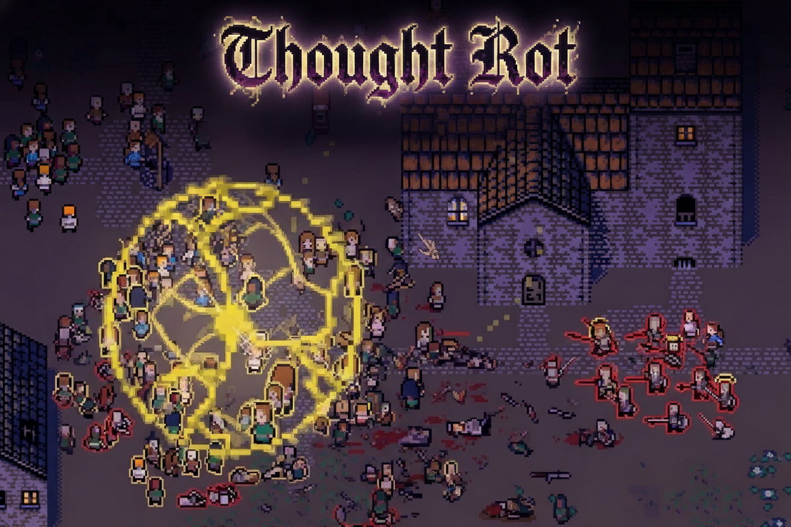

Brackeys Game Jam 2026.2 · Game Jam
Thought Rot
2nd in EnjoymentTop-down incremental corruption game where you aim a hex that converts a living crowd citizen by citizen—then spend Souls, Blood, and Sin on an upgrade tree before the Inquisition sweeps the map. Solo entry for Brackeys Game Jam 2026.2, theme "Trust No One".
- Role
- Solo Developer (design, code, systems, UI, tuning)
- Timeline
- 7 days
- Team Size
- Solo

Project highlight
First 2D project and first incremental game—shipped solo in 7 days on Unity 6 / URP 2D with Entitas ECS, with a complete run → spend → upgrade loop that still banks currency even on short rounds. Placed 2nd in Enjoyment at Brackeys Game Jam 2026.2.
What I built
- Designed and implemented the full game solo: core loop, systems, UI, and tuning.
- Built a positioning-first hex: aim the influence radius, fire the first pulse, then convert walking crowds while stopping Reporters before they spike temples.
- Created a three-currency meta (Souls / Blood / Sin), an upgrade tree (radius, strength, frequency, seekers, explosions, denser crowds, seven deadly sins), three maps, and a sequential seal/task chain.
- Built the gameplay on the Entitas ECS framework, running the walking crowd, the hex, and conversion logic as components and systems.
Challenges
- Keeping late-game incremental pacing readable and fair while scaling hex power, crowd density, and Inquisition pressure across three map tiers.
Results & impact
- Placed 2nd in Enjoyment in the Brackeys Game Jam 2026.2 ratings.
- Published a complete playable jam build on itch.io (web and Windows).